MAC (0x8000-0x8330) :
These registers control the associated XAUI MAC
Register Summary
Register Definitions
MAC Info (MPIPE_XAUI_MAC_INFO: 0x0000)
Describes connection of this MAC to mPIPE.
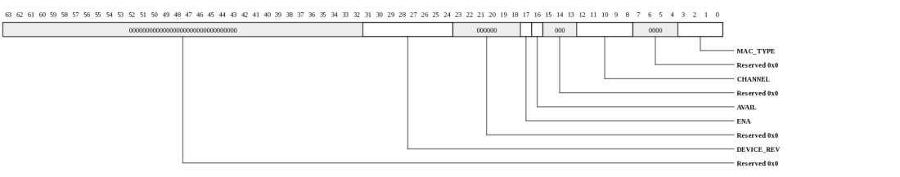
| Bits | Name | Type | Reset | Description
| 31:24 | DEVICE_REV | RO | 0 | Device revision ID. |
| 17 | ENA | RO | 0 | MAC has been enabled by mPIPE's MAC_ENABLE register |
| 16 | AVAIL | RO | 0 | MAC is available and may be enabled This register will be clear if the system configuration does not allow this port to be used.(for example if this port's IO PADs are in use by another MAC). The MPIPE_MAC_ENABLE.AVAIL field indicates any MACs that are not enabled for the device. Both this AVAIL and MPIPE_MAC_ENABLE.AVAIL must be asserted for the MAC to be used. |
| 12:8 | CHANNEL | RO | 0 | mPIPE channel number associated with this MAC |
| 3:0 | MAC_TYPE | RO | 0 | Indicates the type of MAC (XAUI)
| Value | Name | Meaning |
|---|
| 0 | XAUI | XAUI Ethernet MAC Type |
| 1 | SGMII | SGMII Gigabit Ethernet MAC Type |
| 2 | RGMII | RGMII Gigabit Ethernet MAC Type |
| 3 | INTERLAKEN | Interlaken MAC Type |
|
|
|---|
MAC Interface Control (MPIPE_XAUI_MAC_INTFC_CTL: 0x0008)
Provides control over MAC interface functionality.
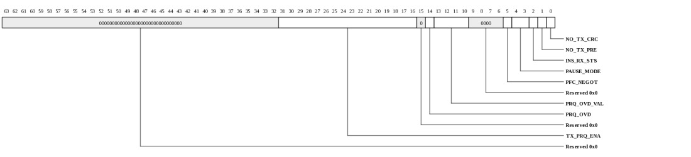
| Bits | Name | Type | Reset | Description
| 31:16 | TX_PRQ_ENA | RW | ffffh | Indicates which priority queues will be monitored for dispatching 802.3 pause frames when PAUSE_MODE is AUTO. When PAUSE_MODE is AUTO_PFC, this determines which queues will be monitored for dispatching PFC frames and sets the priority_enable_vector in the PFC frames. In AUTO_PFC mode, the upper 8 bits are not used. |
| 14 | PRQ_OVD | RW | 0 | When set, the PRQ_OVD_VAL will be used as the priority queue for all incoming packets. When clear, the priority queue will be extracted from the incoming packet's VLAN.PRIORITY field. |
| 13:10 | PRQ_OVD_VAL | RW | 0 | When PRQ_OVD is set, the PRQ_OVD_VAL will be used as the priority queue for all incoming packets. When clear, the priority queue will be extracted from the incoming packet's VLAN.PRIORITY field. |
| 5 | PFC_NEGOT | RO | 0 | Indicates that PFC has been negotiated (PFC pause frame was received). |
| 4:3 | PAUSE_MODE | RW | 0 | Mode for sending pause frames based on iPkt buffer fullness.
| Value | Name | Meaning |
|---|
| 0 | MANUAL | Pause frames will not be automatically sent. |
| 2 | AUTO | Pause frames will be automatically sent when any priority queues matching set bits in TX_PRQ_ENA become full. |
| 3 | AUTO_PFC | PFC pause frames will be automatically sent when a priority queue becomes full. |
|
| 2 | INS_RX_STS | RW | 0 | Append 4-byte status word to Rx (ingress) packet data. The packet will be padded out to the next 8-byte boundary before the 4-byte status is applied. The 32-bit field that arrives at the end of the packet data is defined below:
status[0] = symbol error
status[1] = oversize frame
status[2] = short frame
status[3] = crc error
status[4] = jumbo
status[5] = type_match1
status[6] = type_match2
status[7] = type_match3
status[8] = type_match4
status[9] = local_match1
status[10] = local_match2
status[11] = local_match3
status[12] = local_match4
status[13] = local_match5
status[14] = local_match6
status[15] = local_match7
status[16] = local_match8
status[20:17] = external_match[3:0]
status[21] = vlan_match
status[25:22] = vlan_tci
status[26] = vlan_ptag
status[27] = uni_hash_match
status[28] = multi_hash_match and not broadcast_frame
status[29] = broadcast_frame
status[30] = len/type error
status[31] = RESERVED
|
| 1 | NO_TX_PRE | RW | 0 | When 1, no preamble will be prepended to the packet by the MAC. |
| 0 | NO_TX_CRC | RW | 0 | When 1, no CRC will be appended to the packet by the MAC. Frames will not be padded out to the minimum 60-byte frame size thus software is responsible for sending frames of at least 60 bytes. |
|
|---|
MAC Interface Transmit Control (MPIPE_XAUI_MAC_INTFC_TX_CTL: 0x0010)
Provides control over MAC interface's transmit functionality.
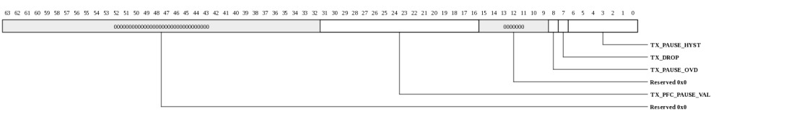
| Bits | Name | Type | Reset | Description
| 31:16 | TX_PFC_PAUSE_VAL | RW | 0 | Indicates which queues should be paused when TX_PAUSE_OVD is set. |
| 8 | TX_PAUSE_OVD | RW | 0 | When 1, PFC egress queues will be paused based on TX_PFC_PAUSE_VAL. When 0, queues will be paused based on received PFC frames. TX_PAUSE_OVD is used to emulate the reception of PFC pause reception in software. |
| 7 | TX_DROP | RW | 0 | When 1, all TX packets will be dropped. This bit is for diagnostics use only and is not used for normal operation. Packets targeting a link that is in the down state are typically dropped using the TRANSMIT_CONFIGURATION.UNI_MODE bit rather than the TX_DROP bit. |
| 6:0 | TX_PAUSE_HYST | RW | 1 | Time to wait between sending pause/unpause frames specified in increments of 512 bit times (Gx9/16/36/72). On Other devices, the increment is 2048 bit times. This should be set based on the maximum transmitted frame size. So, for example, if the largest TX frame is 1500 bytes, this should be set to at least 1500*8/increment_size. |
|
|---|
SERDES Config (MPIPE_XAUI_SERDES_CONFIG: 0x0018)
NOTE: This register only exists in the following devices: Gx9 Gx16 Gx36 Gx72.
Access to SERDES register interface. See SERDES documentation for detailed descriptions of registers.
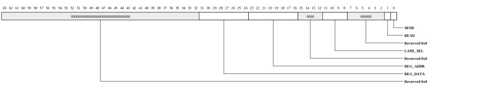
| Bits | Name | Type | Reset | Description
| 31:24 | REG_DATA | RW | 0 | SERDES register data. On writes, this contains data to be written. On reads, this contains the read result. |
| 23:16 | REG_ADDR | RW | 0 | SERDES register address to access. |
| 11:8 | LANE_SEL | RW | 0 | Selects lane(s) for read/write. On writes, more than one lane may be written. On reads, only one bit in LANE_SEL may be set. |
| 1 | READ | RW | 0 | When 1, operation is a read. When 0, operation is a write. |
| 0 | SEND | RW | 0 | When written with a 1, the read/write operation will be performed. Hardware clears this bit when the operation is complete. |
|
|---|
PCS Control (MPIPE_XAUI_PCS_CTL: 0x0020)
NOTE: This register only exists in the following devices: Gx9 Gx16 Gx36 Gx72.
Access to PCS controls.
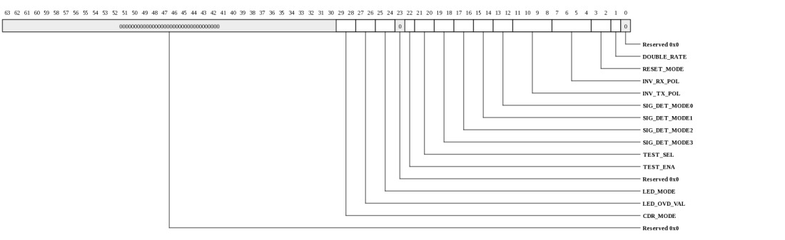
| Bits | Name | Type | Reset | Description
| 29:28 | CDR_MODE | RW | 0 | Mode for acquiring CDR coarse lock.
| Value | Name | Meaning |
|---|
| 0 | AUTO | CDR will re-acquire coarse lock automatically based on PCS decoder errors and unaligned symbols. |
| 1 | IDLE_ONLY | CDR will re-acquire coarse lock only when idle (ignore PCS decoder errors and unaligned symbols). |
| 2 | ALWAYS | CDR will be forced to continually lock (create constant stream of pseudo-PCS decoder errors to CDR). |
|
| 27:26 | LED_OVD_VAL | RW | 0 | State of the LEDs when MODE=SW. Setting to 1 pulls down the IO pin (typically "on"), 0 tristates the pin (typically "off"). |
| 25:24 | LED_MODE | RW | 0 | Controls behavior of LEDs.
| Value | Name | Meaning |
|---|
| 0 | LINK_ACT | Pin[1] indicates link up (PCS_UNALIGNED=0). Pin[0] indicates activity on either TX or RX. |
| 1 | TX_RX | Pin[1] indicates TX activity. Pin[0] indicates RX activity. When the link is up (PCS_UNALIGNED=0), the LEDs will be turned on and will blink off only when there is activity in the associated direction. When the link is down (PCS_UNALIGNED=1), the LEDs will be turned off. |
| 2 | SW | Pins are controlled by LED_OVD_VAL field. |
|
| 22 | TEST_ENA | RW | 0 | PCS test enable. When set to 1, the pattern selected by TEST_SEL will be sent to the SERDES. |
| 21:20 | TEST_SEL | RW | 0 | PCS test select when TEST_ENA is 1.
| Value | Name | Meaning |
|---|
| 0 | HIGH_FREQ | High frequency pattern (01010101010101010110...) |
| 1 | LOW_FREQ | LOW frequency pattern (00000111110000011111...) |
| 2 | MIXED_FREQ | Mixed frequency pattern (111110101100000...) |
|
| 19:18 | SIG_DET_MODE3 | RW | 0 | Controls how signal-detect to the MAC will be driven for lane 3. See SIG_DET_MODE0 for encodings |
| 17:16 | SIG_DET_MODE2 | RW | 0 | Controls how signal-detect to the MAC will be driven for lane 2. See SIG_DET_MODE0 for encodings |
| 15:14 | SIG_DET_MODE1 | RW | 0 | Controls how signal-detect to the MAC will be driven for lane 1. See SIG_DET_MODE0 for encodings |
| 13:12 | SIG_DET_MODE0 | RW | 0 | Controls how signal-detect to the MAC will be driven for lane 0.
| Value | Name | Meaning |
|---|
| 0 | CDR_LOCK | Force signal-detect low if the CDR is not locked or the SERDES detects electrical idle |
| 1 | ELEC_IDLE | Force signal-detect low if the SERDES detects electrical idle |
| 2 | FORCE_LO | Force signal-detect low |
| 3 | FORCE_HI | Force signal-detect high |
|
| 11:8 | INV_TX_POL | RW | 0 | Invert the polarity on the data being sent to the SERDES for the associated lane |
| 7:4 | INV_RX_POL | RW | 0 | Invert the polarity on data received from the associated lane of the SERDES |
| 3:2 | RESET_MODE | RW | 0 | Controls PCS reset.
| Value | Name | Meaning |
|---|
| 0 | AUTO | PCS will be held in reset until port is enabled. |
| 1 | RESET_ASSERT | PCS is forced into reset. |
| 3 | RESET_DEASSERT | PCS is forced out of reset. |
|
| 1 | DOUBLE_RATE | RW | 0 | Double-rate XAUI. When 1, the XAUI port operates at 6.25 Gbps per lane rather than 3.125 Gbps per lane. This setting is generally made at the time PORT_ENABLE is set. |
|
|---|
PCS Control-1 (MPIPE_XAUI_PCS_CTL1: 0x0028)
NOTE: This register only exists in the following devices: Gx9 Gx16 Gx36 Gx72.
Access to PCS controls.
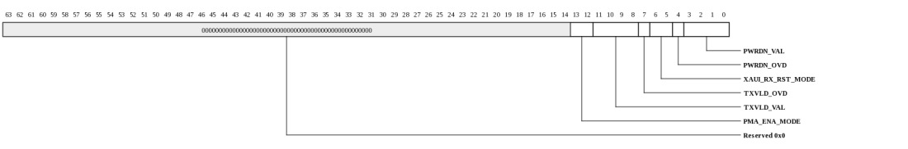
| Bits | Name | Type | Reset | Description
| 13:12 | PMA_ENA_MODE | RW | 0 | Provides port-enable control
| Value | Name | Meaning |
|---|
| 0 | AUTO | PMA will be enabled when mac is enabled. |
| 2 | FORCE_DISABLE | Force PMA to be disabled |
| 3 | FORCE_ENABLE | Force PMA to be enabled. |
|
| 11:8 | TXVLD_VAL | RW | 0 | Override the associated lane's TX-VLD state when TXVLD_OVD is one |
| 7 | TXVLD_OVD | RW | 0 | Override the lanes' TX-VALID state using TXVLD_VAL. When 0, each lane's TX-valid state will be controlled automatically based on whether the port is enabled. |
| 6:5 | XAUI_RX_RST_MODE | RW | 0 | Provides XAUI PCS RX Reset control
| Value | Name | Meaning |
|---|
| 0 | AUTO | RX reset will be controlled based on PMA initialization state. |
| 2 | FORCE_ASSERT | Force RX reset to assert. |
| 3 | FORCE_DEASSERT | Force RX reset to deassert. |
|
| 4 | PWRDN_OVD | RW | 0 | Override the lanes' powerdown state using PWRDN_VAL. When 0, each lane's powerdown state will be controlled automatically based on whether the port is enabled. |
| 3:0 | PWRDN_VAL | RW | 0 | Override the associated lane's powerdown state when PWRDN_OVD is one |
|
|---|
PCS Status (MPIPE_XAUI_PCS_STS: 0x0030)
NOTE: This register only exists in the following devices: Gx9 Gx16 Gx36 Gx72.
Access to PCS controls.
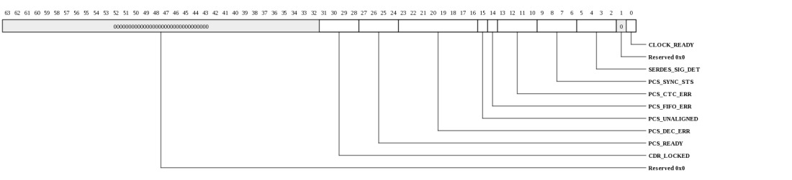
| Bits | Name | Type | Reset | Description
| 31:28 | CDR_LOCKED | RO | 0 | PCS is ready and CDR locked for the associated lane. |
| 27:24 | PCS_READY | RO | 0 | PCS has completed PHY initialization on the associated lane. |
| 23:16 | PCS_DEC_ERR | W1TC | 0 | PCS decode error (Write-1-to-clear). |
| 15 | PCS_UNALIGNED | RO | 0 | Indicates lane alignment of PCS. When zero, traffic may be received on the link. |
| 14 | PCS_FIFO_ERR | W1TC | 0 | PCS CTC FIFO error (Write-1-to-clear) |
| 13:10 | PCS_CTC_ERR | W1TC | 0 | PCS CTC error (Write-1-to-clear). |
| 9:6 | PCS_SYNC_STS | RO | 0 | PCS synchronization indicator per lane |
| 5:2 | SERDES_SIG_DET | RO | 0 | SERDES RX signal detect indicators for each lane. |
| 0 | CLOCK_READY | RO | 0 | SERDES PLL has been spun up and is providing clock to MAC(s). |
|
|---|
Interrupt Mask (MPIPE_XAUI_INTERRUPT_MASK: 0x0038)
Mask individual PCS/MAC Interrupts. If an interrupt's INTERRUPT_MASK bit is set, the condition will not cause an interrupt to be dispatched to mPIPE. However, the INTERRUPT_STATUS register will still log the condition. The meanings of individual bits are defined in the INTERRUPT_STATUS register.
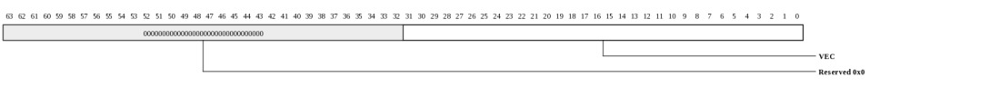
| Bits | Name | Type | Reset | Description
| 31:0 | VEC | RW | ffffffffh | Mask vector. Individual bit definitions are found in the INTERRUPT_STATUS register. |
|
|---|
Interrupt Status (MPIPE_XAUI_INTERRUPT_STATUS: 0x0040)
Status of individual PCS/MAC Interrupts. Bits are set when the condition occurs (even if the MASK bit is 1). Bits are W1TC. Unmasked interrupts are ORd together to form the MAC interrupt delivered to mPIPE.
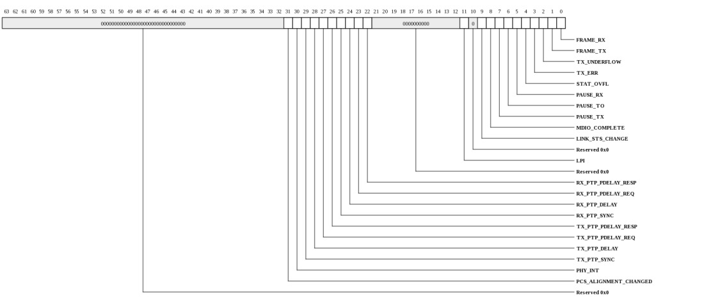
| Bits | Name | Type | Reset | Description
| 31 | PCS_ALIGNMENT_CHANGED | W1TC | 0 | For Gx9/16/36/72, this indicates the lane alignment of the PCS has changed. For other devices, this indicates the PCS_INTERRUPT_STATUS contains the associated interrupt. For these devices, this interrupt bit is not sticky and does not need to be cleared by software. |
| 30 | PHY_INT | W1TC | 0 | External PHY interrupt. |
| 29 | TX_PTP_SYNC | W1TC | 0 | PTP sync frame was transmitted. TS_COUNT value captured in TX_1588. |
| 28 | TX_PTP_DELAY | W1TC | 0 | PTP delay frame was transmitted. TS_COUNT value captured in TX_1588. |
| 27 | TX_PTP_PDELAY_REQ | W1TC | 0 | PTP pdelay_req frame was transmitted. TS_COUNT value captured in TX_1588. |
| 26 | TX_PTP_PDELAY_RESP | W1TC | 0 | PTP pdelay_resp frame was transmitted. TS_COUNT value captured in TX_1588. |
| 25 | RX_PTP_SYNC | W1TC | 0 | PTP sync frame was received. TS_COUNT value captured in TX_1588. |
| 24 | RX_PTP_DELAY | W1TC | 0 | PTP delay frame was received. TS_COUNT value captured in TX_1588. |
| 23 | RX_PTP_PDELAY_REQ | W1TC | 0 | PTP pdelay_req frame was received. TS_COUNT value captured in TX_1588. |
| 22 | RX_PTP_PDELAY_RESP | W1TC | 0 | PTP pdelay_resp frame was received. TS_COUNT value captured in TX_1588. |
| 11 | LPI | W1TC | 0 | Receive LPI indication status bit changed. |
| 9 | LINK_STS_CHANGE | W1TC | 0 | Link fault status change detected |
| 8 | MDIO_COMPLETE | W1TC | 0 | PHY frame complete (MDIO) |
| 7 | PAUSE_TX | W1TC | 0 | PAUSE frame transmitted |
| 6 | PAUSE_TO | W1TC | 0 | PAUSE counter time out - interrupt triggered by either counter decrementing to zero, or being loaded with zero from an RX zero PAUSE frame. |
| 5 | PAUSE_RX | W1TC | 0 | Non-zero PAUSE frame received |
| 4 | STAT_OVFL | W1TC | 0 | Statistics counter overflow |
| 3 | TX_ERR | W1TC | 0 | TX error signal from TX FIFO interface |
| 2 | TX_UNDERFLOW | W1TC | 0 | TX underflow |
| 1 | FRAME_TX | W1TC | 0 | Frame transmitted |
| 0 | FRAME_RX | W1TC | 0 | Frame Received |
|
|---|
MAC Clock Count (MPIPE_XAUI_CLOCK_COUNT: 0x0048)
Provides relative clock frequency between core (pclk) domain and device (xaui clk) clock domains.

| Bits | Name | Type | Reset | Description
| 15:1 | COUNT | RO | 0 | Indicates the number of core clocks that were counted during 1000 device clock periods. Result is accurate to within +/-1 core clock periods. |
| 0 | RUN | RW | 0 | When 1, the counter is running. Cleared by HW once count is complete. When written with a 1, the count sequence is restarted. Counter runs automatically after reset. Software must poll until this bit is zero, then read the CLOCK_COUNT register again to get the final COUNT value. |
|
|---|
Calibration Control (MPIPE_XAUI_CALIB_CTL: 0x0050)
NOTE: This register only exists in the following devices: Gx9 Gx16 Gx36 Gx72.
Controls SERDES calibration.

| Bits | Name | Type | Reset | Description
| 24 | CALIB_VLD | RW | 0 | Calibration value for the SERDES is valid. When this is 1, the CALIB_VAL will be used. When this is zero, the PMA's FSM will generate the calibration value. |
| 23:0 | CALIB_VAL | RW | 0 | Calibration value to provide to PMA when CALIB_MODE is SW |
|
|---|
Calibration Status (MPIPE_XAUI_CALIB_STS: 0x0058)
NOTE: This register only exists in the following devices: Gx9 Gx16 Gx36 Gx72.
Provides SERDES calibration status.
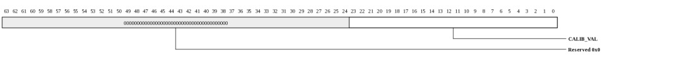
| Bits | Name | Type | Reset | Description
| 23:0 | CALIB_VAL | RO | 0 | Calibration value from SERDES. This is only valid for the SERDES connected to the external calibration resistor. And it is only valid if SERDES calibration was performed ((efuse/MMIO register value was not used). |
|
|---|
Transmit 1588 (MPIPE_XAUI_TX_1588: 0x0060)
Provides captured local time of most recent tx 1588 frame. Software can correlate the local TS_COUNT to the mPIPE's timestamp in order to determine a low jitter frame transmit time. One algorithm for determining the time at which a 1588 frame was transmitted is:
1) Prior to 1588 activity, repeatedly read TS_COUNT and MPIPE_TIMESTAMP_VAL in alternating order and take the median of the differences. This will provide an accurate correlation between the TS_COUNT and the low 13 bits of MPIPE_TIMESTAMP_VAL.
2) Write eDMA descriptor for 1588 PTP packet
2) Poll on the TX_PTP INTERRUPT_STATUS bit. Alternate between reading the status bit and reading the MPIPE_TIMESTAMP_VAL
3) Once the INTERRUPT_STATUS bit is set, read the CAPT_TS value
4) Reread the MPIPE_TIMESTAMP_VAL to be sure not more than 8192 nanoseconds have passed.
5) The frame TX time can now be determined by using the correlation (difference) value from step-1. The low 13-bits of the MPIPE_TIMESTAMP_VAL would be replaced by CAPT_TS+CORRELATION_VALUE.

| Bits | Name | Type | Reset | Description
| 12:0 | CAPT_TS | RO | 0 | Captured local TS_COUNT at the time a PTP sync/delay/pdelay_req/pdelay_resp was transmitted. |
|
|---|
Receive 1588 (MPIPE_XAUI_RX_1588: 0x0068)
Provides captured local time of most recent rx 1588 frame. Software can correlate the local TS_COUNT to the mPIPE's timestamp in order to determine a low jitter frame transmit time.
| Bits | Name | Type | Reset | Description
| 12:0 | CAPT_TS | RO | 0 | Captured local TS_COUNT at the time a PTP sync/delay/pdelay_req/pdelay_resp was received. |
|
|---|
Timestamp count (MPIPE_XAUI_TS_COUNT: 0x0070)
Provides a timestamp that can be used to correlate TX/RX 1588 frames with the mPIPE timestamper.
| Bits | Name | Type | Reset | Description
| 12:0 | VAL | RO | 0 | This represents the value of mPIPE's nanosecond counter (from the timestamp unit). By subtracting the R/TX_1588.CAPT_TS value from this value, SW can determine how many nanoseconds have passed since the associated frame was transmitted/received. |
|
|---|
MAC Interface FIFO Control (MPIPE_XAUI_MAC_INTFC_FIFO_CTL: 0x0078)
Provides control over MAC interface's FIFOs for diagnostics.
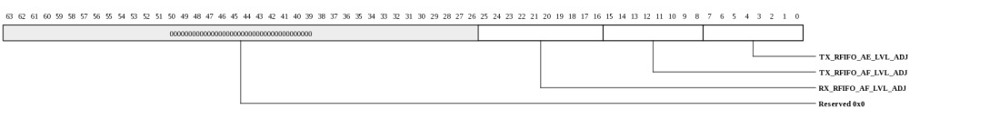
| Bits | Name | Type | Reset | Description
| 25:16 | RX_RFIFO_AF_LVL_ADJ | RW | 0 | Controls full threshold for RX FIFO. This register field is for diagnostics only. Changing this value from the default can cause packet corruption. |
| 15:8 | TX_RFIFO_AF_LVL_ADJ | RW | 0 | Controls full threshold for TX FIFO. This register field is for diagnostics only. Changing this value from the default can cause packet corruption. This register must be written twice (or another MAC register accessed) for the value to take effect. |
| 7:0 | TX_RFIFO_AE_LVL_ADJ | RW | 0 | Controls empty threshold for TX FIFO. This register field is for diagnostics only. Changing this value from the default can cause packet corruption. |
|
|---|
Transmit Control (MPIPE_XAUI_TRANSMIT_CONTROL: 0x8000)
Transmit Control
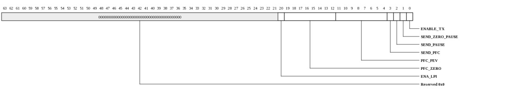
| Bits | Name | Type | Reset | Description
| 20 | ENA_LPI | RW | 0 | Enable LPI transmission. When set LPI (low power idle) is immediately transmitted on txd and txc. |
| 19:12 | PFC_ZERO | RW | 0 | If bit 3 of the transmit control register is written with a one then for each entry equal to zero in [19:12] the PFC frame's pause quantum field associated with that entry will be taken from the transmit pause quanta register. For each entry equal to one in [19:12], the pause quantum associated with that entry will be zero. |
| 11:4 | PFC_PEV | RW | 0 | If bit 3 of the transmit control register is written with a one then the priority enable vector of the PFC priority based pause frame will be set equal to the value stored in these bits. |
| 3 | SEND_PFC | WO | 0 | Send PFC Priority Based PAUSE frame. Takes the values stored in bits 19:4 of this register. |
| 2 | SEND_PAUSE | WO | 0 | Send PAUSE frame - writing a one to this register causes one pause frame with pause time equal to the current setting of the transmit PAUSE timer register to be transmitted. Writing a 0 has no effect. This register is self clearing. |
| 1 | SEND_ZERO_PAUSE | WO | 0 | Send zero PAUSE frame - writing a one to this register causes one pause frame with pause time equal to zero to be transmitted. Writing a 0 has no effect. This register is self clearing. |
| 0 | ENABLE_TX | RW | 0 | Enable transmission - when set enables transmission. When reset transmission ceases immediately. The contents of the statistics and configuration registers are not affected by reset of this bit. |
|
|---|
Transmit Configuration (MPIPE_XAUI_TRANSMIT_CONFIGURATION: 0x8008)
Transmit Configuration
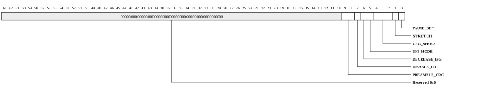
| Bits | Name | Type | Reset | Description
| 9:8 | PREAMBLE_CRC | RW | 0 | Add the preamble to the CRC calculation. Configure as follows: 2'b0x - CRC calculation starts from byte 8 (default for 802.3 compliance). 2'b10 - CRC calculation starts from byte 0. 2'b11 - CRC calculation starts from byte 4. |
| 7 | DISABLE_DIC | RW | 0 | Disable deficit idle count. Setting this bit will disable DIC and force the IPG transmission between 9 and 12 bytes. For compliance with the 802.3 specification, this bit must be kept low. |
| 6 | DECREASE_IPG | RW | 0 | Decrease average transmitted IPG. When set, the transmitted IPG can be a value between 3 and 11 bytes, averaging 8 bytes. When clear, the transmitted IPG can be a value between 9 and 15 bytes, averaging 12 bytes. For compliance with the 802.3 specification, this bit must be kept clear. This bit is ignored if deficit idle count is disabled. |
| 5 | UNI_MODE | RW | 0 | Unidirectional operation enable. When set the MAC is able to transmit frames when the link fault state machine is indicating local or remote fault. See 802.3 Clause 66. |
| 4:2 | CFG_SPEED | RW | 2 | Set according to cfg_clk speed. This determines the divisor that will be applied to cfg_clk to generate MDC. To conform with 802.3, MDC must not exceed 2.5 MHz. Note that MDC is only active during MDIO read and write operations. 000: divide by 8 (cfg_clk up to 20 MHz) 001: divide by 16 (cfg_clk up to 40 MHz) 010: divide by 32 (cfg_clk up to 80 MHz) 011: divide by 48 (cfg_clk up to 120 MHz) 100: divide by 64 (cfg_clk up to 160 MHz) 101: divide by 96 (cfg_clk up to 240 MHz) 110: divide by 128 (cfg_clk up to 320 MHz) 111: divide by 224 (cfg_clk up to 540 MHz) |
| 1 | STRETCH | RW | 0 | Stretch mode feature is enabled for WAN PHYs. When set, the transmit logic increases the IPG following large packets to reduce the transmit bandwidth for compatibility with SONET OC192 networks. |
| 0 | PAUSE_DET | RW | 0 | Enable pausing of transmission when PAUSE frame received. |
|
|---|
Transmit Pause Quanta Register Receive Control (MPIPE_XAUI_TRANSMIT_PAUSE_QUANTA: 0x8010)
Transmit Pause Quanta Register Receive Control
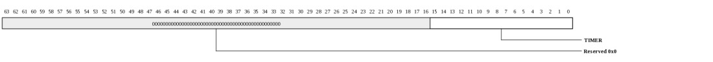
| Bits | Name | Type | Reset | Description
| 15:0 | TIMER | RW | ffffh | Timer value for transmitted PAUSE packets manual and automatic |
|
|---|
Receive Control (MPIPE_XAUI_RECEIVE_CONTROL: 0x8018)
Receive Control
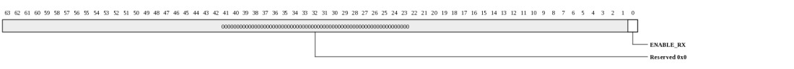
| Bits | Name | Type | Reset | Description
| 0 | ENABLE_RX | RW | 0 | Enable Receive |
|
|---|
Receive Configuration (MPIPE_XAUI_RECEIVE_CONFIGURATION: 0x8020)
Receive Configuration
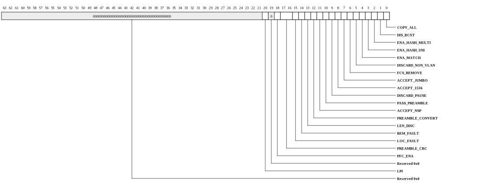
| Bits | Name | Type | Reset | Description
| 20 | LPI | RW | 0 | LPI Indication - Low power idle has been detected on receive. This bit is set when LPI is detected and reset when normal idle is detected. An interrupt is generated when the state of this bit changes. |
| 18 | PFC_ENA | RW | 0 | Enable PFC Priority Based Pause Reception capabilities. Setting this bit will allow PFC priority based pause frames to be received. |
| 17:16 | PREAMBLE_CRC | RW | 0 | Add the preamble to the
CRC calculation.
Configure as follows:
2'b0x : CRC calculation starts from byte 8 (default)
2'b10 : CRC calculation starts from byte 0
2'b11 : CRC calculation starts from byte 4 |
| 15 | LOC_FAULT | RW | 0 | Local Fault |
| 14 | REM_FAULT | RW | 0 | Remote fault bits 14 and 15 indicate the state of the
receive link fault state machine. |
| 13 | LEN_DISC | RW | 0 | Length field error frame discard - setting this bit causes
frames with a measured length not equal to the extracted
length field (as indicated by bytes 13 and 14 in a
non-VLAN tagged frame) to be discarded by asserting
rx_w_err. Only frames 1518 bytes or less in length and
with a length field value between 46 and 1535 are tested.
VLAN tagged frames are also checked. |
| 12 | PREAMBLE_CONVERT | RW | 0 | When set, all accepted preamble bytes are converted to IEEE 802.3 preamble. When cleared, preamble is not converted. |
| 11 | ACCEPT_NSP | RW | 0 | If set, both standard IEEE 802.3 preamble bytes and nonstandard preamble bytes are accepted. When cleared, only IEEE 802.3 preamble is accepted. |
| 10 | PASS_PREAMBLE | RW | 0 | When set, any accepted preamble is passed through to the RX FIFO interface with the frame data. When cleared, any accepted preamble bytes are stripped from the frame data before it is passed to the RX FIFO interface. |
| 9 | DISCARD_PAUSE | RW | 0 | Discard pause frames - when set, received valid PAUSE frames are not copied into the receive FIFO, even in promiscuous mode. |
| 8 | ACCEPT_1536 | RW | 0 | Accept 1536 byte (VLAN tagged) frames - when set, frames 18 bytes longer then the standard 1518 frame will be accepted without generating a length error. If both bits 7 and 8 are low then frames up to 1518 bytes are accepted. |
| 7 | ACCEPT_JUMBO | RW | 0 | Accept long (jumbo) frames - when set, frames of up to 10240 bytes will be accepted without generating a length error. There are various configuration options to change the default lengths for tagged and jumbo frames. These are explained under parameterization later on. |
| 6 | FCS_REMOVE | RW | 0 | FCS remove - when set, the FCS will not be copied into the FIFO. The EOP will be asserted on (or the status appended after) the last data byte. |
| 5 | DISCARD_NON_VLAN | RW | 0 | Discard non-VLAN frames - when set, only VLAN tagged frames will be passed to the address matching logic. |
| 4 | ENA_MATCH | RW | 0 | Enable external match - when set, frames will be copied into the FIFO if one of the three external address match pins are asserted. |
| 3 | ENA_HASH_UNI | RW | 0 | Enable hash unicast - when set, hash matches unicast frames are accepted. |
| 2 | ENA_HASH_MULTI | RW | 0 | Enable hash multicast - when set, multicast frames are accepted. |
| 1 | DIS_BCST | RW | 0 | Disable broadcast - when set, broadcast frames are ignored unless bit 0 is set. |
| 0 | COPY_ALL | RW | 0 | Copy all frames - when set, all valid frames are copied to the FIFO. Frames with errors will be discarded. |
|
|---|
RX Hash Register Bottom (MPIPE_XAUI_RX_HASH_BOTTOM: 0x8028)
RX Hash Register Bottom
| Bits | Name | Type | Reset | Description
| 31:0 | HASH_LO | RW | 0 | hash[31:0] |
|
|---|
RX Hash Register Top (MPIPE_XAUI_RX_HASH_TOP: 0x8030)
RX Hash Register Top
| Bits | Name | Type | Reset | Description
| 31:0 | HASH_HI | RW | 0 | hash[63:32] |
|
|---|
Exact Match - Bottom (MPIPE_XAUI_EXACT_MATCH_BOTTOM_0: 0x8038)
Exact Match - Bottom

| Bits | Name | Type | Reset | Description
| 31:0 | ADDR | RW | 0 | Exact address [31:0] |
|
|---|
Exact Match - Top (MPIPE_XAUI_EXACT_MATCH_TOP_0: 0x8040)
Exact Match - Top

| Bits | Name | Type | Reset | Description
| 15:0 | ADDR | RW | 0 | Exact address [47:32] |
|
|---|
Exact Match - Bottom (MPIPE_XAUI_EXACT_MATCH_BOTTOM_1: 0x8048)
Exact Match - Bottom

| Bits | Name | Type | Reset | Description
| 31:0 | ADDR | RW | 0 | Exact address [31:0] |
|
|---|
Exact Match - Top (MPIPE_XAUI_EXACT_MATCH_TOP_1: 0x8050)
Exact Match - Top

| Bits | Name | Type | Reset | Description
| 15:0 | ADDR | RW | 0 | Exact address [47:32] |
|
|---|
Exact Match - Bottom (MPIPE_XAUI_EXACT_MATCH_BOTTOM_2: 0x8058)
Exact Match - Bottom

| Bits | Name | Type | Reset | Description
| 31:0 | ADDR | RW | 0 | Exact address [31:0] |
|
|---|
Exact Match - Top (MPIPE_XAUI_EXACT_MATCH_TOP_2: 0x8060)
Exact Match - Top

| Bits | Name | Type | Reset | Description
| 15:0 | ADDR | RW | 0 | Exact address [47:32] |
|
|---|
Exact Match - Bottom (MPIPE_XAUI_EXACT_MATCH_BOTTOM_3: 0x8068)
Exact Match - Bottom

| Bits | Name | Type | Reset | Description
| 31:0 | ADDR | RW | 0 | Exact address [31:0] |
|
|---|
Exact Match - Top (MPIPE_XAUI_EXACT_MATCH_TOP_3: 0x8070)
Exact Match - Top

| Bits | Name | Type | Reset | Description
| 15:0 | ADDR | RW | 0 | Exact address [47:32] |
|
|---|
Exact Match - Bottom (MPIPE_XAUI_EXACT_MATCH_BOTTOM_4: 0x8078)
Exact Match - Bottom

| Bits | Name | Type | Reset | Description
| 31:0 | ADDR | RW | 0 | Exact address [31:0] |
|
|---|
Exact Match - Top (MPIPE_XAUI_EXACT_MATCH_TOP_4: 0x8080)
Exact Match - Top

| Bits | Name | Type | Reset | Description
| 15:0 | ADDR | RW | 0 | Exact address [47:32] |
|
|---|
Exact Match - Bottom (MPIPE_XAUI_EXACT_MATCH_BOTTOM_5: 0x8088)
Exact Match - Bottom

| Bits | Name | Type | Reset | Description
| 31:0 | ADDR | RW | 0 | Exact address [31:0] |
|
|---|
Exact Match - Top (MPIPE_XAUI_EXACT_MATCH_TOP_5: 0x8090)
Exact Match - Top

| Bits | Name | Type | Reset | Description
| 15:0 | ADDR | RW | 0 | Exact address [47:32] |
|
|---|
Exact Match - Bottom (MPIPE_XAUI_EXACT_MATCH_BOTTOM_6: 0x8098)
Exact Match - Bottom

| Bits | Name | Type | Reset | Description
| 31:0 | ADDR | RW | 0 | Exact address [31:0] |
|
|---|
Exact Match - Top (MPIPE_XAUI_EXACT_MATCH_TOP_6: 0x80a0)
Exact Match - Top

| Bits | Name | Type | Reset | Description
| 15:0 | ADDR | RW | 0 | Exact address [47:32] |
|
|---|
Exact Match - Bottom (MPIPE_XAUI_EXACT_MATCH_BOTTOM_7: 0x80a8)
Exact Match - Bottom

| Bits | Name | Type | Reset | Description
| 31:0 | ADDR | RW | 0 | Exact address [31:0] |
|
|---|
Exact Match - Top (MPIPE_XAUI_EXACT_MATCH_TOP_7: 0x80b0)
Exact Match - Top

| Bits | Name | Type | Reset | Description
| 15:0 | ADDR | RW | 0 | Exact address [47:32] |
|
|---|
Type Match (MPIPE_XAUI_TYPE_MATCH0: 0x80b8)
Type Match

| Bits | Name | Type | Reset | Description
| 31 | ENA | RW | 0 | Enable copying of type matched frames |
| 15:0 | TYPE | RW | 0 | Type to match |
|
|---|
Type Match (MPIPE_XAUI_TYPE_MATCH1: 0x80c0)
Type Match

| Bits | Name | Type | Reset | Description
| 31 | ENA | RW | 0 | Enable copying of type matched frames |
| 15:0 | TYPE | RW | 0 | Type to match |
|
|---|
Type Match (MPIPE_XAUI_TYPE_MATCH2: 0x80c8)
Type Match
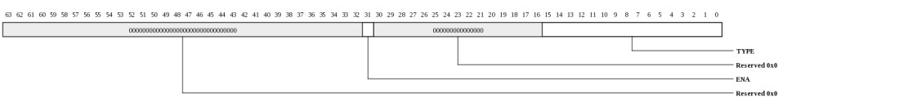
| Bits | Name | Type | Reset | Description
| 31 | ENA | RW | 0 | Enable copying of type matched frames |
| 15:0 | TYPE | RW | 0 | Type to match |
|
|---|
Type Match (MPIPE_XAUI_TYPE_MATCH3: 0x80d0)
Type Match

| Bits | Name | Type | Reset | Description
| 31 | ENA | RW | 0 | Enable copying of type matched frames |
| 15:0 | TYPE | RW | 0 | Type to match |
|
|---|
Diagnostics Interrupt Status (MPIPE_XAUI_DIAG_INTERRUPT_STATUS: 0x80d8)
Interrupt Status Register for MAC interrupt conditions. This register has no effect on the MAC interrupts defined in XAUI_CFG_INT_STS
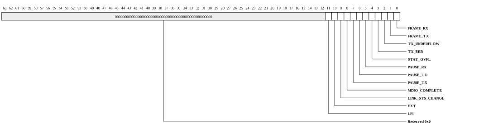
| Bits | Name | Type | Reset | Description
| 11 | LPI | RO | 0 | Receive LPI indication status bit changed. |
| 10 | EXT | RO | 0 | External interrupt detected (conditions controlled by PCS_INT_MASK) |
| 9 | LINK_STS_CHANGE | RO | 0 | Link fault status change detected |
| 8 | MDIO_COMPLETE | RO | 0 | PHY frame complete (MDIO) |
| 7 | PAUSE_TX | RO | 0 | PAUSE frame transmitted |
| 6 | PAUSE_TO | RO | 0 | PAUSE counter time out - interrupt triggered by either counter decrementing to zero, or being loaded with zero from an RX zero PAUSE frame. |
| 5 | PAUSE_RX | RO | 0 | Non-zero PAUSE frame received |
| 4 | STAT_OVFL | RO | 0 | Statistics counter overflow |
| 3 | TX_ERR | RO | 0 | TX error signal from TX FIFO interface |
| 2 | TX_UNDERFLOW | RO | 0 | TX underflow |
| 1 | FRAME_TX | RO | 0 | Frame transmitted |
| 0 | FRAME_RX | RO | 0 | Frame Received |
|
|---|
Interrupt Mask (MPIPE_XAUI_DIAG_INTERRUPT_MASK: 0x80e0)
Interrupt Mask Register. This register has no effect on the MAC interrupts defined in XAUI_CFG_INT_STS
| Bits | Name | Type | Reset | Description
| 11:0 | MASK | RO | fffh | Interrupt mask |
|
|---|
Interrupt Enable (MPIPE_XAUI_DIAG_INTERRUPT_ENABLE: 0x80e8)
Interrupt Enable Register. This register has no effect on the MAC interrupts defined in XAUI_CFG_INT_STS
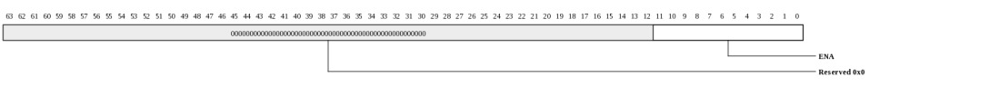
| Bits | Name | Type | Reset | Description
| 11:0 | ENA | WO | 0 | Enable associated interrupt when written with a 1 |
|
|---|
Interrupt Disable (MPIPE_XAUI_DIAG_INTERRUPT_DISABLE: 0x80f0)
Interrupt Disable Register. This register has no effect on the MAC interrupts defined in XAUI_CFG_INT_STS
| Bits | Name | Type | Reset | Description
| 11:0 | DIS | WO | 0 | Disable associated interrupt when written with a 1 |
|
|---|
PAUSE Count (MPIPE_XAUI_PAUSE_COUNT: 0x80f8)
PAUSE Count

| Bits | Name | Type | Reset | Description
| 15:0 | TIMER | RO | 0 | Current state of PAUSE timer for transmit channel |
|
|---|
Statistics Control (MPIPE_XAUI_STATISTICS_CONTROL: 0x8100)
Statistics Control
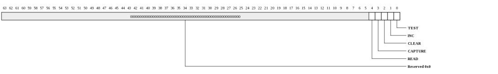
| Bits | Name | Type | Reset | Description
| 4 | READ | WO | 0 | Read snapshot - writing a one means that the snapshot value of the statistics registers will be read back. Default is to read back the current value. Snapshot registers are not cleared on read. |
| 3 | CAPTURE | WO | 0 | Take snapshot - writing a one records the current value of all statistics registers in the snapshot registers and clears the statistics registers. This register is self clearing. |
| 2 | CLEAR | WO | 0 | Clear statistics registers - writing a one clears all the statistics registers. This register is self clearing. |
| 1 | INC | WO | 0 | Increment statistics registers - writing a one will increment the statistics registers by one for test purposes. This register is self clearing |
| 0 | TEST | RW | 0 | Test mode write enable - writing a one to this bit means that the network statistics can be written to for test purposes, and enables writes to the interrupt status register. |
|
|---|
MDIO Control (MPIPE_XAUI_MDIO_CONTROL: 0x8108)
MDIO Control
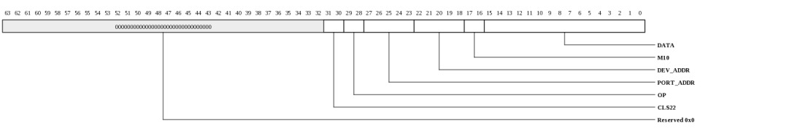
| Bits | Name | Type | Reset | Description
| 31:30 | CLS22 | RW | 0 | Must be written with 00 for a valid Clause 45 frame (01 for a Clause 22 frame). |
| 29:28 | OP | RW | 0 | Operation. 10 is post read address increment. 01 is write. 00 is an address frame. 11 is read (for a Clause 22 frame 10 is read and 01 is write). |
| 27:23 | PORT_ADDR | RW | 0 | Port address |
| 22:18 | DEV_ADDR | RW | 0 | Device address |
| 17:16 | M10 | RW | 0 | Must be written to 10. |
| 15:0 | DATA | RW | 0 | For a write operation, this is written with the data to be written to the PHY. After a read operation, this contains the data read from the PHY. |
|
|---|
Module ID (MPIPE_XAUI_MODULE_ID: 0x81f8)
Module ID
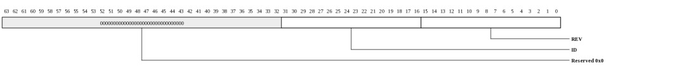
| Bits | Name | Type | Reset | Description
| 31:16 | ID | RO | 3 | MAC ID number. Fixed to 0x0003. |
| 15:0 | REV | RO | HW | MAC revision number. |
|
|---|
Transmitted Octets (MPIPE_XAUI_TRANSMITTED_OCTETS_LO: 0x8200)
Transmitted Octets in Frames Without Errors [31:0]. This register is cleared on read.

| Bits | Name | Type | Reset | Description
| 31:0 | TX_BYTES | RO | 0 | Transmit octets in frames without errors [31:0]. The number of octets transmitted in valid frames of any type. This register is 45 bits and takes up two 32 bit locations. All valid frame octets are counted except those of PAUSE frames. |
|
|---|
Transmitted Octets (MPIPE_XAUI_TRANSMITTED_OCTETS_HI: 0x8208)
Transmitted Octets in Frames Without Errors. This register is cleared on read.
| Bits | Name | Type | Reset | Description
| 31:0 | TX_BYTES | RO | 0 | Transmit octets in frames without errors. All valid frame octets are counted except those of PAUSE frames. Note that the octet counter is 44 bits in TileGx 9, 16, 36, and 72. |
|
|---|
Transmitted Frames (MPIPE_XAUI_TRANSMITTED_FRAMES_LO: 0x8210)
Transmitted Frames Without Errors Excluding Pause Frames [31:0]. This register is cleared on read.

| Bits | Name | Type | Reset | Description
| 31:0 | TX_FRAMES | RO | 0 | Number of complete frames transmitted without error [31:0]. All valid frames are counted except PAUSE frames. |
|
|---|
Transmitted Frames (MPIPE_XAUI_TRANSMITTED_FRAMES_HI: 0x8218)
Transmitted Frames Without Errors Excluding Pause Frames. This register is cleared on read.
| Bits | Name | Type | Reset | Description
| 31:0 | TX_FRAMES | RO | 0 | Number of complete valid frames transmitted without error. Note that the octet counter is 36 bits in TileGx 9, 16, 36, and 72. |
|
|---|
Transmitted Broadcast Frames (MPIPE_XAUI_TRANSMITTED_BROADCAST_FRAMES: 0x8220)
Transmitted Broadcast Frames. This register is cleared on read.
| Bits | Name | Type | Reset | Description
| 31:0 | TX_BCST | RO | 0 | Number of complete broadcast frames transmitted without error [31:0]. All valid frames are counted except PAUSE frames. 32 bits |
|
|---|
Transmitted Multicast Frames (MPIPE_XAUI_TRANSMITTED_MULTICAST_FRAMES: 0x8228)
Transmitted Multicast Frames. This register is cleared on read.
| Bits | Name | Type | Reset | Description
| 31:0 | TX_MULTI | RO | 0 | Number of complete multicast frames transmitted without error [31:0]. All valid frames are counted except PAUSE frames 32 bits |
|
|---|
Transmitted PAUSE Frames (MPIPE_XAUI_TRANSMITTED_PAUSE_FRAMES: 0x8230)
Transmitted PAUSE Frames. This register is cleared on read.
| Bits | Name | Type | Reset | Description
| 15:0 | TX_PAUSE | RO | 0 | Number of complete valid PAUSE frames transmitted without error [15:0]. 16 bits |
|
|---|
64 Byte Frames Transmitted (MPIPE_XAUI_64_BYTE_FRAMES_TRANSMITTED: 0x8238)
64 Byte Frames Transmitted. This register is cleared on read.

| Bits | Name | Type | Reset | Description
| 31:0 | FRAMES | RO | 0 | Number of complete valid frames transmitted with actual length exactly 64 bytes. PAUSE frames are not counted. 32 bits |
|
|---|
65-127 Byte Frames Transmitted (MPIPE_XAUI_65_127_BYTE_FRAMES_TRANSMITTED: 0x8240)
65-127 Byte Frames Transmitted. This register is cleared on read.

| Bits | Name | Type | Reset | Description
| 31:0 | FRAMES | RO | 0 | Number of complete valid frames transmitted with actual length between 65 and 127 bytes. PAUSE frames are not counted. 32 bits |
|
|---|
128-255 Byte Frames Transmitted (MPIPE_XAUI_128_255_BYTE_FRAMES_TRANSMITTED: 0x8248)
128-255 Byte Frames Transmitted. This register is cleared on read.

| Bits | Name | Type | Reset | Description
| 31:0 | FRAMES | RO | 0 | Number of complete valid frames transmitted with actual length between 128 and 255 bytes. PAUSE frames are not counted. 32 bits |
|
|---|
256-511 Byte Frames Transmitted (MPIPE_XAUI_256_511_BYTE_FRAMES_TRANSMITTED: 0x8250)
256-511 Byte Frames Transmitted. This register is cleared on read.

| Bits | Name | Type | Reset | Description
| 31:0 | FRAMES | RO | 0 | Number of complete valid frames transmitted with actual length between 256 and 511 bytes. PAUSE frames are not counted. 32 bits |
|
|---|
512-1023 Byte Frames Transmitted (MPIPE_XAUI_512_1023_BYTE_FRAMES_TRANSMITTED: 0x8258)
512-1023 Byte Frames Transmitted. This register is cleared on read.

| Bits | Name | Type | Reset | Description
| 31:0 | FRAMES | RO | 0 | Number of complete valid frames transmitted with actual length between 512 and 1023 bytes. PAUSE frames are not counted. 32 bits |
|
|---|
1024-1518 Byte Frames Transmitted (MPIPE_XAUI_1024_1518_BYTE_FRAMES_TRANSMITTED: 0x8260)
1024-1518 Byte Frames Transmitted. This register is cleared on read.

| Bits | Name | Type | Reset | Description
| 31:0 | FRAMES | RO | 0 | Number of complete valid frames transmitted with actual length between 1024 and 1518 bytes. PAUSE frames are not counted. 32 bits |
|
|---|
1519-Max Byte Frames Transmitted (MPIPE_XAUI_1519_MAX_BYTE_FRAMES_TRANSMITTED: 0x8268)
1519-Max Byte Frames Transmitted. This register is cleared on read.

| Bits | Name | Type | Reset | Description
| 31:0 | FRAMES | RO | 0 | Number of complete valid frames transmitted without error with length greater than between 1519 bytes. 32 bits |
|
|---|
Transmitted Error Frames (MPIPE_XAUI_TRANSMITTED_ERROR_FRAMES: 0x8270)
Transmitted Error Frames. This register is cleared on read.

| Bits | Name | Type | Reset | Description
| 31:0 | FRAMES | RO | 0 | Number of complete or incomplete frames transmitted. Error frames are complete frames with bad CRC and incomplete frames transmitted due to underflow or error detected from the upper layer after transmission has started. 32 bits |
|
|---|
Received Octets Register Low (MPIPE_XAUI_RECEIVED_OCTETS_LO: 0x8278)
Received Octets Register Low [31:0]. This register is cleared on read.

| Bits | Name | Type | Reset | Description
| 31:0 | RX_BYTES | RO | 0 | Octets received in frames without errors [31:0]. The number of octets received in valid frames of any type. This register is 45 bits and takes up two 32 bit locations. |
|
|---|
Received Octets Register High (MPIPE_XAUI_RECEIVED_OCTETS_HI: 0x8280)
Received Octets Register High. This register is cleared on read. Note that the octet counter is 44 bits in TileGx 9, 16, 36, and 72.
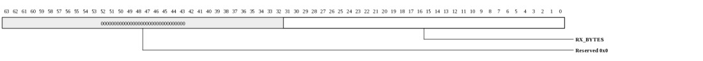
| Bits | Name | Type | Reset | Description
| 31:0 | RX_BYTES | RO | 0 | Octets received in frames without errors [44:32] |
|
|---|
Received Frames Register Low [31:0 (MPIPE_XAUI_RECEIVED_FRAMES_LO: 0x8288)
Received Frames Register Low [31:0]. This register is cleared on read.

| Bits | Name | Type | Reset | Description
| 31:0 | RX_FRAMES | RO | 0 | Number of complete frames received without error [31:0]. All frames are counted unless an error is detected. |
|
|---|
Received Frames Register High (MPIPE_XAUI_RECEIVED_FRAMES_HI: 0x8290)
Received Frames Register High. This register is cleared on read.
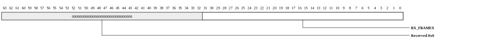
| Bits | Name | Type | Reset | Description
| 31:0 | RX_FRAMES | RO | 0 | Number of complete frames received without error. Note that the frame counter is 44 bits in TileGx 9, 16, 36, and 72. |
|
|---|
Received Broadcast Frames (MPIPE_XAUI_RECEIVED_BROADCAST_FRAMES: 0x8298)
Received Broadcast Frames. This register is cleared on read.
| Bits | Name | Type | Reset | Description
| 31:0 | BCST | RO | 0 | Number of complete, valid, broadcast frames received without error. 32 bits |
|
|---|
Received Multicast Frames (MPIPE_XAUI_RECEIVED_MULTICAST_FRAMES: 0x82a0)
Received Multicast Frames. This register is cleared on read.
| Bits | Name | Type | Reset | Description
| 31:0 | MCST | RO | 0 | Number of complete, valid, multicast frames received without error. 32 bits |
|
|---|
Received PAUSE Frames (MPIPE_XAUI_RECEIVED_PAUSE_FRAMES: 0x82a8)
Received PAUSE Frames. This register is cleared on read.
| Bits | Name | Type | Reset | Description
| 15:0 | PAUSE | RO | 0 | Number of complete PAUSE frames received without error. All pause frames are counted even if ignored by the pause transmission logic. 16 bits |
|
|---|
64 Byte Frames Received (MPIPE_XAUI_64_BYTE_FRAMES_RECEIVED: 0x82b0)
64 Byte Frames Received. This register is cleared on read.

| Bits | Name | Type | Reset | Description
| 31:0 | FRAMES | RO | 0 | Number of complete, error free frames received with actual length exactly 64 bytes. 32 bits |
|
|---|
65-127 Byte Frames Received (MPIPE_XAUI_65_127_BYTE_FRAMES_RECEIVED: 0x82b8)
65-127 Byte Frames Received. This register is cleared on read.

| Bits | Name | Type | Reset | Description
| 31:0 | FRAMES | RO | 0 | Number of complete, error free frames received with actual length between 65 and 127 bytes. 32 bits |
|
|---|
128-255 Byte Frames Received (MPIPE_XAUI_128_255_BYTE_FRAMES_RECEIVED: 0x82c0)
128-255 Byte Frames Received. This register is cleared on read.

| Bits | Name | Type | Reset | Description
| 31:0 | FRAMES | RO | 0 | Number of complete, error free frames received with actual length between 128 and 255 bytes. 32 bits |
|
|---|
256-511 Byte Frames Received (MPIPE_XAUI_256_511_BYTE_FRAMES_RECEIVED: 0x82c8)
256-511 Byte Frames Received. This register is cleared on read.

| Bits | Name | Type | Reset | Description
| 31:0 | FRAMES | RO | 0 | Number of complete, error free frames received with actual length between 256 and 511 bytes. 32 bits |
|
|---|
512-1023 Byte Frames Received (MPIPE_XAUI_512_1023_BYTE_FRAMES_RECEIVED: 0x82d0)
512-1023 Byte Frames Received. This register is cleared on read.

| Bits | Name | Type | Reset | Description
| 31:0 | FRAMES | RO | 0 | Number of complete, error free frames received with actual length between 512 and 1023 bytes. 32 bits |
|
|---|
1024-1518 Byte Frames Received (MPIPE_XAUI_1024_1518_BYTE_FRAMES_RECEIVED: 0x82d8)
1024-1518 Byte Frames Received. This register is cleared on read.
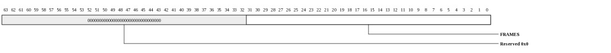
| Bits | Name | Type | Reset | Description
| 31:0 | FRAMES | RO | 0 | Number of complete, error free frames received with actual length between 1024 and 1518 bytes. 32 bits |
|
|---|
1519-Max Byte Frames Received (MPIPE_XAUI_1519_MAX_BYTE_FRAMES_RECEIVED: 0x82e0)
1519-Max Byte Frames Received. This register is cleared on read.

| Bits | Name | Type | Reset | Description
| 31:0 | FRAMES | RO | 0 | Number of complete, error free frames received with actual length between 1519 and max bytes. Max is the maximum frame size specified by bits 7 and 8 in the receive configuration register. 32 bits |
|
|---|
Received Short Frames (MPIPE_XAUI_RECEIVED_SHORT_FRAMES: 0x82e8)
Received Short Frames. This register is cleared on read.

| Bits | Name | Type | Reset | Description
| 15:0 | FRAMES | RO | 0 | Number of frames received which are less than 64 bytes in length and have good CRC. rx_w_err is asserted for short frames. 16 bits |
|
|---|
Received Oversize Frames (MPIPE_XAUI_RECEIVED_OVERSIZE_FRAMES: 0x82f0)
Received Oversize Frames. This register is cleared on read.

| Bits | Name | Type | Reset | Description
| 15:0 | FRAMES | RO | 0 | Number of frames received with valid CRC which were greater than the maximum permitted frame size specified by bits 7 and 8 of the receive configuration register. 16 bits |
|
|---|
Received Jabber Frames (MPIPE_XAUI_RECEIVED_JABBER_FRAMES: 0x82f8)
Received Jabber Frames. This register is cleared on read.

| Bits | Name | Type | Reset | Description
| 15:0 | FRAMES | RO | 0 | Number of frames received with bad CRC which were longer than the maximum size permitted by bits 7 and 8 of the receive configuration register. 16 bits |
|
|---|
Received CRC Error Frames (MPIPE_XAUI_RECEIVED_CRC_ERROR_FRAMES: 0x8300)
Received CRC Error Frames. This register is cleared on read.

| Bits | Name | Type | Reset | Description
| 15:0 | FRAMES | RO | 0 | Number of legal length frames which had bad CRC. Short frames with bad CRC will not be counted. Long frames with bad CRC will be counted as jabbers. Note for the 104 release onwards this includes frames with symbol errors, for earlier releases this excludes frames with symbol errors. 16 bits |
|
|---|
Received Length Field Error Frames (MPIPE_XAUI_RECEIVED_LENGTH_FIELD_ERROR_FRAMES: 0x8308)
Received Length Field Error Frames. This register is cleared on read.

| Bits | Name | Type | Reset | Description
| 15:0 | FRAMES | RO | 0 | Number of frames whose actual length does not match the length specified in the frame's length field. Only frames 1518 bytes or less in length and with a length field value between 46 and 1535 will be tested for length field errors. 16 bits. |
|
|---|
Received Symbol/Code Error Frames (MPIPE_XAUI_RECEIVED_SYMBOL_CODE_ERROR_FRAMES: 0x8310)
Received Symbol/Code Error Frames. This register is cleared on read.

| Bits | Name | Type | Reset | Description
| 15:0 | FRAMES | RO | 0 | Number of frames in which a symbol error is signaled by the PHY via XGMII during reception of data. Only the first symbol error in any one frame is counted. 16 bits |
|
|---|
Received LPI (MPIPE_XAUI_RECEIVED_LPI: 0x8318)
Received LPI transitions.. This register is cleared on read.

| Bits | Name | Type | Reset | Description
| 15:0 | COUNT | RO | 0 | A count of the number of times there is a transition from receiving normal idle to receiving low power idle. Cleared on read. |
|
|---|
Received LPI time (MPIPE_XAUI_RECEIVED_LPI_TIME: 0x8320)
Received LPI timer.

| Bits | Name | Type | Reset | Description
| 23:0 | VAL | RO | 0 | This register increments once every 102.4 ns when the LPI indication bit 20 is set in the receive configuration register. Cleared on read. |
|
|---|
Transmit LPI (MPIPE_XAUI_TRANSMIT_LPI: 0x8328)
Transmit LPI transitions. This register is cleared on read.
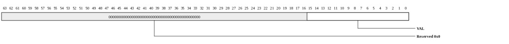
| Bits | Name | Type | Reset | Description
| 15:0 | VAL | RO | 0 | A count of the number of times the enable LPI transmission bit 20 goes from low to high in the transmit control register. |
|
|---|
Transmit LPI time (MPIPE_XAUI_TRANSMIT_LPI_TIME: 0x8330)
Transmit LPI timer.
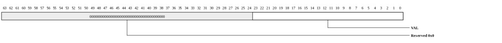
| Bits | Name | Type | Reset | Description
| 23:0 | VAL | RO | 0 | This register increments once every 102.4 ns when the enable LPI transmission bit 20 is set in the transmit control register. Cleared on read. |
|
|---|
Copyright © 2014 Tilera® Corporation. All rights reserved.
Printed in the United States of America.
No part of this book may be reproduced, stored in a retrieval system,
or transmitted in any form or by any means, electronic, mechanical,
photocopying, recording, or otherwise, except as may be expressly permitted
by the applicable copyright statutes or in writing by the Publisher.
The following are registered trademarks of Tilera Corporation: Tilera
and the Tilera logo. The following are trademarks of Tilera
Corporation: Embedding Multicore, The Multicore Company, Tile
Processor, TILE Architecture, TILE64, TILEPro, TILEPro36, TILEPro64,
TILExpress, TILExpress-64, TILExpressPro-64, TILExpress-20G,
TILExpressPro-20G, TILExpressPro-22G, iMesh, TileDirect, TILEmpower,
TILEmpower-Gx, TILEncore, TILEncorePro, TILEncore-Gx, TILE-Gx,
TILE-Gx16, TILE-Gx36, TILE-Gx64, TILE-Gx100, TILE-Gx3000, TILE-Gx5000,
TILE-Gx8000, DDC (Dynamic Distributed Cache), Multicore Development
Environment, Gentle Slope Programming, iLib, TMC (Tilera Multicore
Components), hardwall, Zero Overhead Linux (ZOL), MiCA (Multicore
iMesh Coprocessing Accelerator), and mPIPE (multicore Programmable
Intelligent Packet Engine). All other trademarks and/or registered
trademarks are the property of their respective owners.
Third-party software: The Tilera IDE makes use of the BeanShell scripting
library. Source code for the BeanShell library can be found at the
BeanShell website (http://www.beanshell.org/developer.html).
The following is a trademark of Marvell Semiconductor, Inc.: Distributed
Switching Architecture (DSA).
This document contains advance information on Tilera products that are
in development, sampling or initial production phases. This information
and specifications contained herein are subject to change without notice
at the discretion of Tilera Corporation.
No license, express or implied by estoppels or otherwise, to any
intellectual property is granted by this document. Tilera disclaims any
express or implied warranty relating to the sale and/or use of Tilera
products, including liability or warranties relating to fitness for
a particular purpose, merchantability or infringement of any patent,
copyright or other intellectual property right.
Products described in this document are NOT intended for use in medical,
life support, or other hazardous uses where malfunction could result in
death or bodily injury.
THE INFORMATION CONTAINED IN THIS DOCUMENT IS PROVIDED ON AN "AS IS"
BASIS. Tilera assumes no liability for damages arising directly or
indirectly from any use of the information contained in this document.